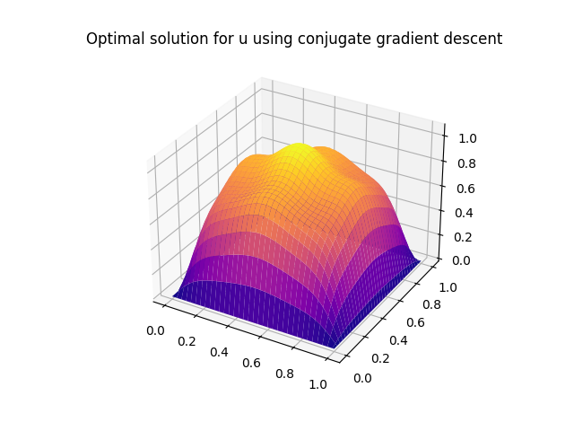
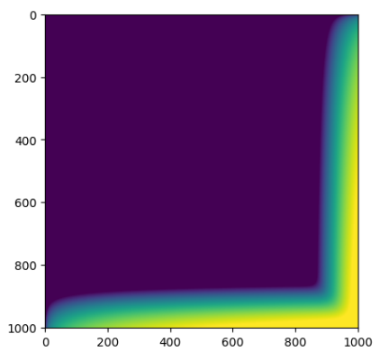

|
Ngoc (Natalie) Pham I'm a graduate from MS-DAS, Carnegie Mellon University (CMU). I am currently working as teaching assistant and research assistant at Machine Learning Department, CMU, where I was advised by Professor Andrej Risteski. I did my undergraduation at Chinese University of Hong Kong, majored in Mathematics. My research interest are theorectical machine learning and its application in scientific domains, specifically in differential equations. |

|
ProjectsApplications of Machine Learning and Deep Learning to various fields. |

|
Machine Learning Pipelines for Microscopic Images Processing
Natalie Pham, Gautami Kant Slide, Spring 2023 A project collaborated with Bristol Myer Squibb. By applying machine learning techniques, meaningful pseudo-labels can be assigned to images, such as distinguishing between ill-formed and well-formed protein droplets or identifying different conformations of HS-AFM molecules. This process reduces the need for manual labeling of new data, saving time and effort. |

|
Art Works Classification
Natalie Pham, Tianhan Ling, Jie Sing Yoo Slide, report, Spring 2023 Can a neural network model perform better in identifying the genre and artist of an art piece by inspecting various properties of the art? This project involved experimenting with difference CNN structures for the multi-class classification task to distinguish various genre, such as impressionism, pop-art, surrealism, of art works. |

|
Behavioral Risk Factor Surveillance System Analysis
Tianhan Ling, Alice Wu, Natalie Pham Slide, Fall 2022 This project investigated how behaviour and health conditions might affect General Health Status of people. This aims to identify populations at increased risk of chronic health conditions. XGBoost or Random Forest models, with oversampling to resolve the issue of imbalanced classes, gave the highest prediction accuracy of 80%. |
|
Optimization and numerical methods for Partial Differential Equations (PDEs) |
|

|
Survey Gradient Descent Methods for Optimizing the Optimal Control Problem
Natalie Pham Spring 2023 Used various gradient descent methods to solve the Optimal Control Problem under the constraint of a linear PDE with Dirichlet Boundary Conditions. Evaluate their performance in terms of both computational runtime and solution accuracy. |
|

|
Solve a Laplace Equation Using Parallel Computing
Natalie Pham Fall 2022 Given a boundary condition, simulate the diffusion of heat across a 2D grid using Jacobi method in a parallel computing environment to approximate the temperature distribution over time. By leveraging parallelism through a parallel algorithm using the Message Passing Interface (MPI), the computation time was almost 7 times faster than that of the serial implementation. |
Achievements and Awards
|
|
This website's is adapted from Jon Barron's source code. |